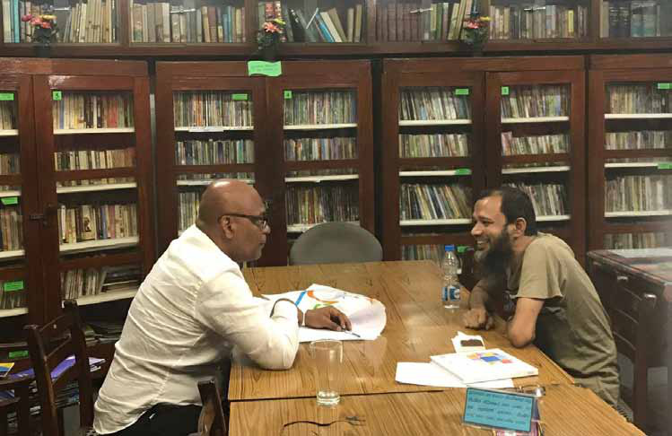
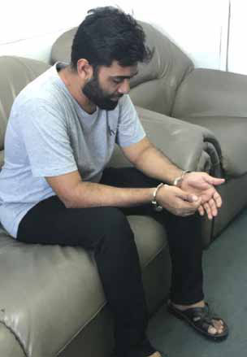
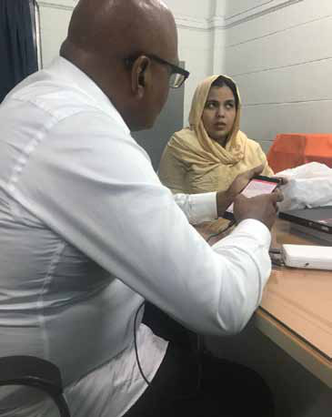
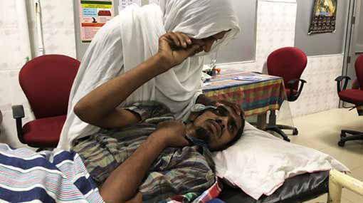
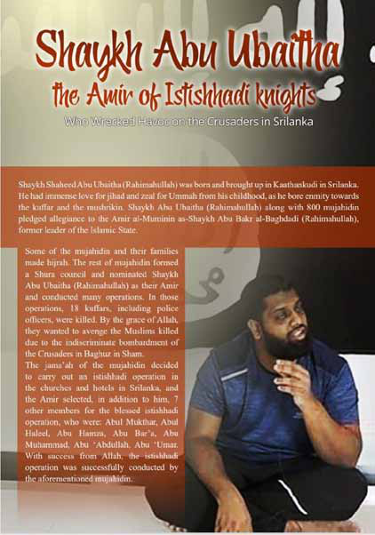
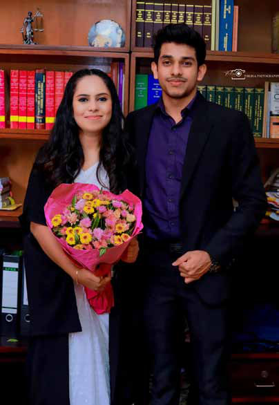
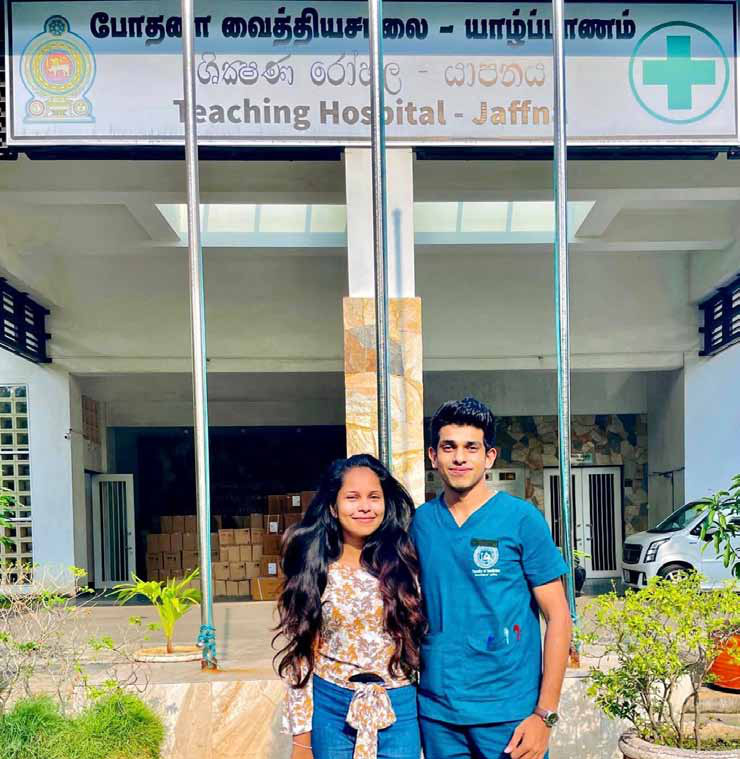

S ri Lanka’s most catastrophic terrorist attack continues to be exploited for personal and political gains. Sri Lanka will mark the sixth anniversary of the Easter Sunday massacre on April 21, 2025. Sri Lanka’s most powerful religious leader Malcolm Cardinal Ranjith has issued an ultimatum to the incumbent government to deliver justice for the victims of the Easter Sunday attack. If not, the Cardinal threatens to stage mass protests that will compromise social, political and economic stability.
S ri Lanka’s most catastrophic terrorist attack continues to be exploited for personal and political gains. Sri Lanka will mark the sixth anniversary of the Easter Sunday massacre on April 21, 2025. Sri Lanka’s most powerful religious leader Malcolm Cardinal Ranjith has issued an ultimatum to the incumbent government to deliver justice for the victims of the Easter Sunday attack. If not, the Cardinal threatens to stage mass protests that will compromise social, political and economic stability.
Jaffna Monitor hellojaffnamonitor@gmail.com 59 S ri Lanka’s most catastrophic terrorist attack continues to be exploited for personal and political gains. Sri Lanka will mark the sixth anniversary of the Easter Sunday massacre on April 21, 2025. Sri Lanka’s most powerful religious leader Malcolm Cardinal Ranjith has issued an ultimatum to the incumbent government to deliver justice for the victims of the Easter Sunday attack. If not, the Cardinal threatens to stage mass protests that will compromise social, political and economic stability. Four successive Sri Lankan leaders and their governments could not convince the Cardinal of the truth. Relentless in his campaign, his influence contributed appreciably to ousting presidents Maithripala Sirisena, Gotabhaya Rajapaksa, and Ranil Wickramasinghe. Will manipulation of the facts of the Easter Sunday massacre destabilise the current government too? Today, the Cardinal is on a collision course with President Anura Kumara Dissanayake. If President Dissanayake too fails to convince the leader of the Catholic community of the truth, he will be the fourth Sri Lankan leader to face the wrath of the Cardinal. Both the domestic and foreign investigations have concluded that the attack was staged by Muslim religious extremists. Their findings are consistent with the global trend where over 90% of the acts of terrorism are staged by Muslim religious extremists. There is nothing wrong with Islam but with Muslims who misinterpret their faith for political and personal gain. In Sri Lanka, it is time for the people to understand the party politics and the politicians that have gravely damaged Sri Lanka’s unity and harmony. It is time to stop playing dirty politics and disclose to the nation, the key findings of the Easter Sunday massacre. Easter Attack Investigations In a democracy, if justice for the Easter Sunday victims is to be delivered, it should be based on evidence and not conspiracy. After extensive investigations and research, I wrote, “Sri Lanka’s Easter Sunday Massacre - Lessons to be Learnt” to set the record straight. Having interviewed the leadership of the Islamic State Sri Lanka Branch, I also interviewed Abdul Kader Fatima Hadiya, the widow of Mohammed Hashim Mohammed Zahran. I also interviewed Zahran’s deputy and his successor Mohamed Ibrahim Mohamed Naufer and its military wing leader Hayatu Mohamed Ahmed Milhan. Both remain in custody. They have all admitted to the attack and I have documented in detail what they have said to me and to both the Sri Lankan and foreign investigators. There is no inconsistency in the findings by the Sri Lankan and foreign investigators. The disparity lies in how certain politicians have misinterpreted and misrepresented the facts surrounding the Easter attack. Additionally, a group of YouTubers, clergymen, and NGO activists have propagated distorted narratives and unfounded theories. The following excerpts from my book respond to these false claims and aim to challenge the narratives put forth by conspiracy theorists. The Easter attack is one of the most thoroughly investigated terrorist attacks in the world. After the 9/11 attack by Al Qaeda and the October 7, 2023 attack by Hamas and the Palestinian Islamic Jihad, Sri Lanka’s Easter Sunday attack by the Islamic State is the world’s third worst terrorist attack. The world witnessed savagery because the perpetrators deliberately butchered civilians. The attackers distorted Islam, invoked Allah, and killed, maimed and injured innocent civilians.
Jaffna Monitor hellojaffnamonitor@gmail.com 60 Rohan Gunaratna interviewing the Islamic State leader Noufer, the successor of Zahran Rohan Gunaratna interviewing Hadiya, widow of Zahran, the founding leader of the Islamic State in Sri Lanka Milhan, the military wing leader of the Islamic State in Sri Lanka



Jaffna Monitor hellojaffnamonitor@gmail.com 61 Successive Sri Lankan governments have established fact-finding bodies to better understand the attack. Accordingly, special committees and boards have been appointed by the government to investigate and report on matters relevant to the Easter attack. Both local and foreign government authorities investigated and reported their findings. Local mechanisms 1. Report of the Special Three-Member Inquiry Panel on the Easter Sunday Attacks (June 10, 2019) 2. Report of the Parliamentary Select Committee on the Easter Sunday Attacks (October 23, 2019) 3. Report of the Parliamentary Sectoral Oversight Committee on National Security (February 19, 2020) 4. Report of the Presidential Special Commiss- ion of Inquiry into the Easter Sunday Bombings, Volume 1 (January 31, 2021) 5. Report of the Cabinet Ministerial Sub-Committee appointed on the implementation of the recommendations of the Presidential Commission on the Easter Sunday Attacks and the Oversight Committee on National Security (April 05, 2021) 6. Report of the Committee to investigate the facts of the program broadcast on Channel 4 regarding the Easter Sunday bombings (June 25, 2024) 7. Report of the Committee of Inquiry appointed under the chairmanship of retired Judge A.N.J. Alwis on Intelligence Coordination and Investigations into the Easter Sunday Bombings (September 14, 2024) In addition, law enforcement authorities notably the Police conducted investigations. The Counter-Terrorism and Investigation Division and the Criminal Investigation Department arrested about a hundred individuals and initiated legal proceedings. Furthermore, on January 12, 2023, a seven- judge bench of the Supreme Court delivered a landmark judgment concerning the Easter Sunday attacks. These fundamental rights cases were filed to examine how various public officials fulfilled their duties before and during the bombings on April 21, 2019. Those found responsible included Maithripala Sirisena (then President), Hemasiri Fernando (Secretary to the Ministry of Defence), Pujith Jayasundara (Inspector General of Police), Sisira Mendis (Chief of National Intelligence), and Nilantha Jayawardena (Director, State Intelligence Service), all of whom were ordered to pay compensation. However, Muslim politicians who ignored the growing threat of radicalisation, and religious leaders who failed to safeguard the sanctity of religious spaces, have yet to be held accountable. Foreign investigations The Sri Lanka Police launched a comprehensive investigation into the Easter Sunday bombings. The Criminal Investigation Department expanded this into an international investigation to identify all perpetrators involved. Accordingly, foreign authorities including Scotland Yard, Federal Bureau of Investigation (FBI), Australian Federal Police (AFP), India’s National Investigation Agency (NIA), Maldives Police Service, and Interpol have cooperated and assisted the Sri Lanka Police.
Jaffna Monitor hellojaffnamonitor@gmail.com 62 Additionally, individual foreign countries have conducted independent investigations, published certain reports, filed charges, and pursued legal action. 1. United States of America At the invitation of and with the permission from the Sri Lankan government, a team of FBI officials visited Sri Lanka in April 2019. The team included technical and forensic analysts with specialized equipment. Following investigations conducted jointly by the United States FBI and Sri Lanka, with assistance from the Attorney General's Department of Sri Lanka, the United States Federal Court in Los Angeles has indicted the following suspects, who are currently in custody in Sri Lanka, for nine crimes under United States law (including conspiracy, aiding, abetting, training, and providing assistance) in the attacks targeting tourist hotels that killed five American citizens and other foreigners: i. Mohamed Ibrahim Mohamed Naufer ii. Mohammed Anwar Mohammed Rizkan iii. Hayatu Mohamed Ahmed Milhan Additionally, as a result of judicial proceedings connected to the Easter Sunday bombings investigation, on October 9, 2020, the US Department of the Treasury's Office of Foreign Assets Control (OFAC) imposed sanctions on Lukman Talib, an Australian resident of Sri Lanka, and his company, Talib and Sons, through Executive Order (EO) 13224, for providing support to the terrorist organization Al Qaeda. This company, based in Melbourne, Australia, has been proven to have provided support to terrorist organizations including Al Qaeda using wealth earned under the guise of conducting gem businesses in Sri Lanka, Brazil, Colombia, Tanzania, Turkey, and the Gulf region. 2. Australia The Australian government has taken legal action against three Australians of Sri Lankan origin who had links to the Easter attackers and confiscated their assets. Australian investigative services have provided assistance to Sri Lankan authorities. Under Operation Geldrop, 15 investigators arrived in the country in April and May 2019, conducted joint investigations with the Sri Lanka Police, and submitted their final reports. M. R. M. Thaslim was shot by Milhan, the head of the Islamic State military wing, after he assisted the police and preempted an islandwide attack in Sri Lanka

Jaffna Monitor hellojaffnamonitor@gmail.com 63 3. Maldives Maldivian nationals with links to the Easter attackers have been identified during initial investigations. The Jamaat-e-Islami cell received from Maldives Islamic State cell to buy a lathe machine to manufacture weapons. It is the same cell that vandalised Buddhist, Christian, and Hindu images, attempted to assassinate M.R.M. Thaslim, a patriotic Muslim who assisted the police, and leased the property in Vanathavillu where Zahran established his weapons manufacturing and training base. Legal action is likely to be taken against these individuals following joint investigations by Maldivian intelligence officers and investigators. What is the truth? All local and international investigations have clearly established that the Easter Sunday attack was carried out by the Sri Lankan branch of the Islamic State. The groups aligned with the Islamic State included Jamaat-e- Islami and Salafi-Wahhabi factions. Notably, no local or traditional Muslim groups joined Zahran, who lived in a segregated Muslim enclave. There was no integration—only isolation. The attack could have been both prevented and preempted. However, due to critical weaknesses in the state's national security apparatus, the terrorists succeeded. Such a horrific attack in an island nation like Sri Lanka shocked and angered the general public. Despite facts confirmed by numerous local and international investigations, various conspiracy theories have been promoted. The findings have been politicized and the facts have been suppressed, either intentionally or unintentionally. It appears that baseless or weakly substantiated conspiracy theories have gained popularity. Unfortunately, 53% of Sri Lankans believe local political forces were involved in the Easter Sunday attacks carried out in 2019, according to a survey commissioned in October by Syndicated Surveys, a survey instrument by Verité Research, a credible think tank led by Nishan de Mel. Only 8% believed that it was carried out without the involvement of local political forces. A high percentage, 39%, said they have no opinion or refused to comment. The findings demonstrated that Sri Lanka has no capable public information plan, approach, and strategy to educate its own citizenry. Another aspect was that most of the Easter Sunday attack fact-finding reports are in English. Today, a majority of Sri Lankans cannot read, write, or speak in English. A far-reaching government should develop an effective public communications system to debunk misinformation and disinformation. Otherwise, if fake news dominates the information space, the next generation of Sri Lankans will be driven by false narratives and conspiracy theories. One narrative that gained traction and was debunked pertained to Sara Jasmine. Anti-Indian Sri Lankan Muslim politicians promoted the conspiracy theory that India’s foreign intelligence service was behind the Easter Sunday attack and the Research and Analysis Wing recruited as an agent Sarah Jasmine, a convert to Islam. Was Indian intelligence behind the attack? While Sarah Jasmine committed suicide in the Saindamarudu explosion, a false narrative was promoted that she fled to India. Samples for DNA testing were taken on three occasions regarding the individuals who died in the bomb blast at the Saindamarudu house on April 26, 2019.
Jaffna Monitor hellojaffnamonitor@gmail.com 64 Forensic specialist Dr. Ruweera Nadira conducted tests at the Ampara General Hospital and obtained the first 26 DNA samples on April 28-29, 2019. The bodies were cremated on May 2, 2019. The DNA samples were handed over to the Government Analyst's Department on May 8, 2019. Due to the deterioration of 11 of the 26 samples, those bodies were recovered on June 7, 2019, on court orders, and 11 new samples were handed over to the Government Analyst's Department. Sarah Jasmine's mother's blood samples were also sent to the forensic scientist to test against the body parts. The Government Analyst's reports regarding the DNA Islamic State acknowledged its Sri Lanka branch leader Zahran Hashim as being responsible for the Easter Sunday attack samples were received on September 9, 2019, November 15, 2019, and March 3, 2021. However, there was no match with the DNA of Sarah Jasmine's mother. Against this backdrop, various opinions created a social debate on this issue. The main reason was that a personal informant of Chief Inspector Arjun Mahin Kanda, an investigating officer of the Presidential Commission of Inquiry, provided information to the Commission, and accordingly, two eyewitnesses presented evidence that Sarah Jasmine had fled to India. Based on that evidence, Police Inspector Nagur Thambi Abubakkar, attached to the Transport Division of the Ampara Police Division, was arrested by the Colombo Crimes Division on July 11, 2020, on suspicion of having helped Sarah Jasmine escape. Subsequently, a case was filed against him in the High Court. The CID conducted further investigations to determine whether Sarah Jasmine was living in Sri Lanka or had fled to another country. During these investigations, contradictions were observed in the testimonies of individuals who claimed Sarah Jasmine had fled, and there was no corroborating evidence. Accordingly, it was decided to once again take samples from all buried bodies and remains. On May 7, 2021, with court permission, the Government

Jaffna Monitor hellojaffnamonitor@gmail.com 65 Analyst's Department, under the leadership of the Criminal Investigation Department, the Counter-Terrorism and Investigation Division, the Colombo Crimes Division, and other judicial officers, conducted an investigation with Zahran’s widow, Abdul Kader Fatima Hadiya, who was present at the house during the bombing. On February 15, 2023, the Government Analytical Department reported that 83 DNA samples, covering all buried body parts recovered on April 27, 2022, matched the DNA of Sarah's mother. Therefore, forensic reports have confirmed that Sarah Jasmine died in the explosion at the Saindamarudu house on April 26, 2019. Was Sri Lankan military behind the attack? Another conspiracy theory that harmed Sri Lanka’s image and reputation was an Easter bombings program aired by Channel 4. Based on a Muslim asylum seeker Channel 4 claimed that former Director General of the State Intelligence Service, Suresh Salley, had been in contact with Zahran Hashim. No commission report or any local or foreign investigation conducted to date has mentioned any connection between Major General Suresh Salley and Zahran. Rejecting the allegations against Major General Sallay, a Sri Lankan government investigation led by Justice Syed Ishrat Imam stated: 'Sallay's alibi is an irreversible fact. There is no evidence at all to show any involvement on the part of Sallay with Zahran or the members of the National Tawheed Jamaat, whose mission in life is death during the aforesaid period and thereafter. The report further examines the truthfulness of allegations, based on statements made by a Criminal Investigation Department investigator regarding facts presented by A photo published on the Islamic State terror group's propaganda outlet, the Amaq agency, on April 23, 2019, showing what the group says is eight bombers who carried out the Easter attacks in Sri Lanka
Jaffna Monitor hellojaffnamonitor@gmail.com 66 Hansir Maulana to the Channel 4 program: "Atugodagedera Vijithakumara Wijayaratne of the CID spoke about a coconut estate about 80 acres in extent situated in Vanathavilluwa in the Karadiyanpual Grama Niladhari Division. This estate had to be accessed through jungle land. The access road was not a straight road but a road with several bends. There was a house built out of cement blocks. The two persons whom the police were looking for were Abu Haneefa Mohamed Mufess and Abu Hansar Mohamed Hamas. They were wanted in connection with the destruction of the statues of Lord Buddha. According to Mufee's statement recorded on 16.01.2019, the house with the cement blocks had been constructed about five months prior to 16.01.2019, i.e., in or about August– September 2018. The police had also found another house that had been constructed in or about August–September 2018. These houses were obviously not there when Pillayan allegedly requested that a meeting be arranged at the said coconut estate in February 2018. Azad Maulana was obviously not speaking the truth in regard to the alleged meeting on the coconut estate. The report further states: "We are disturbed that despite reports and information being readily available regarding the impending April 2019 Easter Sunday bomb attack, no action was taken to prevent the occurrence of that tragedy." Hansir Azad Maulana, who claims to be a witness on Channel 4, has revealed that he had close contact with Supriyaan Mohammed Shafraz, the doctor who treated Zahran’s brother Rilwan when he was injured in a bicycle bomb test five days before the Easter attacks. Reportedly, Dr. Shafraz, who admitted Rilwan to the hospital, fled Sri Lanka immediately after the Easter attacks and sought asylum in a foreign country. The main reason for his escape was the CID's investigation into Rilwan's hospital admission and his arrest. It has also been stated that both this doctor and the Channel 4 whistleblower Hanzeer Azad Maulana are neighbors in Ebenezer Place, Dehiwala, and are also neighbors in Azad's village, Kattankudy. After this medical doctor fled the country, he initially worked for a United Nations-affiliated organization in a South Asian country, and Azad Maulana attempted to get a job with that organization through him. Although the doctor offered him a job in Mali, Maulana declined, stating he preferred to go to a European country. Subsequently, Maulana took steps to obtain political asylum in Europe through another method. This is mentioned in police reports, and the recently released S.I. Imam report has also provided details about this. Accordingly, the committee has recommended that charges be filed against Azath Maulana for his links with terrorists including Rilwan and his close contacts with those who aided the terrorists. Furthermore, the Criminal Investigation Department is currently conducting new investigations regarding the Channel 4 program, including these matters, and Suresh Saleh retired from his position as Director General of the State Intelligence Service before these investigations began. Need for an International Investigation "Questions about involving international
Jaffna Monitor hellojaffnamonitor@gmail.com 67 investigators in the investigation of the Easter attacks have been raised. International investigative assistance has been obtained for the Easter attacks investigation. These agencies include Interpol, the AFP (Australia), the FBI (US), and Scotland Yard (UK). The FBI investigated the Easter Sunday attacks for nearly two years and submitted its final report to the Criminal Investigation Department in Sri Lanka. As five American citizens were dead, the US Department of Justice filed a criminal complaint in the Los Angeles District Court based on the FBI's investigation. FBI investigations identified three Sri Lankans involved in the Easter Sunday attacks and charged Mohammed Naufer, alias Naufer Maulavi, who was responsible for spreading Islamic State ideology in Sri Lanka. Charges have been filed in local courts against him for recruiting others to IS and leading the training necessary to carry out the Easter Sunday attacks. The U.S. Department of Justice stated in its official statement: 'The three defendants named in the criminal complaint, all of whom pledged allegiance to ISIS, are: - Mohammed Naufar, the "second emir" for the group of ISIS supporters that called itself "ISIS in Sri Lanka," who allegedly led the group's propaganda efforts, recruited others to join ISIS, and led a series of multi-day military-type trainings; - Mohamed Anwar Mohamed Riskan, who allegedly helped manufacture the IEDs used in the Easter attacks; and - Ahamed Milhan Hayathu Mohamed, who allegedly executed a police officer in order to obtain the officer's firearm, shot a suspected informant and scouted a location for a separate terrorist attack. Furthermore, the then Sri Lankan Ambassador to the United States, Mahinda Samarasinghe, Sri Lanka's Easter Sunday Massacre Sri Lanka's Easter Sunday Massacre Sri Lanka's Easter Sunday Massacre Prof. Rohan Gunaratna Prof. Rohan Gunaratna Prof. Rohan Gunaratna Y%S ,xldfõ mdial= bßod m%ydrh Y%S ,xldfõ mdial= bßod m%ydrh W.; hq;= mdvï uydpd¾h frdydka .=Kr;ak uydpd¾h frdydka .=Kr;ak uydpd¾h frdydka .=Kr;ak W.; hq;= mdvï mßj¾;kh isß,a pkaøfialr .=Kj¾Ok mßj¾;kh isß,a pkaøfialr .=Kj¾Ok 9 789553 130723 http://www.sarasavi.lk ISBN 978-955-31-3072-3 Rs 000.00 Translation - Political SARASAVI 2025 ~y~ý r±Y£|Y»x£‰ 30 ~ˆf¥p‰z‹ ÜzYyl‰p v£{l, p¨»[‰»[£h. ãyYmp/‡¥Y‰~ˆ: 011 2769446 e-mail: publishing@sarasavi.lk f,dj mqrd we;eï bia,dï wka;jd§kaf.a ls%hdldrlï cd;sl yd cd;Hka;r jYfhka wdrCIdjg ;¾ckhla fjñka mj;S' fuu wka;jd§ lKavdhï wd.ñl yd iudc ffjrh m;=rjk m%ldY lrñka yd foaYk mj;ajñka tA ;=<ska ;%ia;jd§ ls%hdldrlï i|yd ish idudðlhka fmd<Ujñka iudc yd foaYmd,k wia:djrNdjhla cks; lrùug ls%hd lrhs' Tjqkf.a fuu /äl,a u;jdohka yd iudc úfrdaë ls%hdldrlï we;eï wd.ñl ixia:dj,g o iuyr wOHdmk wdh;k ;=<g o äðg,a ls%hdldrlï ;=<g o msúi we;' 2019 wfm%a,a 21jeks Èk Y%S ,xldfõ isÿjQ mdial= m%ydrfha miqìu fuu lD;sh ;=<ska .eUqre idlÉPdjlg n÷ka lrhs' whs'tia' ;%ia;jdofha wdrïNh keÕSu yd me;srhdu o tys n,mEu ;=<ska f,dalfha iy wm rfgys o we;eï lKavdhï ls%hdldrlï we;sùu o tu lKavdhï t,a, lrk ñkSure m%ydrj,g wkd.;fha § wm uqyqK Èh hq;af;a flfiao hkak ms<sn|j o .eUqre l;sldjlg wdpd¾h frdydka .=Kr;ak fuu lD;sh ;=<ska jeo.;a wdrïNhla ,nd § we;' “Sri Lanka’s Easter Sunday Massacre - Lessons to be Learnt” published by Sarasavi, Sri Lanka
Jaffna Monitor hellojaffnamonitor@gmail.com 68 submitted an inquiry into the investigation of the Easter Sunday attacks and its progress, as well as a request for another independent investigation, to the US State Department. The US State Department responded: "Ambassador Samarasinghe, We stand ready to continue providing support to your government. It would not make sense for the United States to conduct an additional investigation into the attacks." The Australian Federal Police conducted investigations into the Easter Sunday attacks, during which more than 700 electronic devices were subjected to forensic examination, and another 33 electronic devices were taken to Australia for forensic examination. In a letter dated March 29, 2022, the then IGP asked the Australian Federal Police whether there were any findings relevant to the investigations. The Australian Federal Police replied on April 21, 2022: "I can advise that the AFP has completed all investigations in conjunction with the Sri Lanka Police and provided reports and conclusions to these authorities." AFP officers and three officers who assisted in the investigation have been included as witnesses in the Colombo Three-Judge High Court Case No. TAB 2972/21 relating to the Easter attacks. The way forward It is six years after the Easter Sunday attacks. The pursuit of truth and justice remains a pressing concern for victims and society. While the suicide perpetrators of the attacks are no longer alive, numerous individuals and networks that supported them—through financial, material, and ideological means— have been identified, arrested, and are facing prosecution both in Sri Lanka and internationally. Despite this progress, questions of accountability persist, particularly regarding the systemic failures and institutional negligence that enabled the attacks. Accusations have been leveled against members of the intelligence community, law enforcement, political leadership, and bureaucratic institutions—yet several have evaded scrutiny and justice. In addition to starting a program to rehabilitate the violent and radical extremists in custody, the clerics and preachers who promote suspicion, prejudice, resentment, anger, and hatred should be investigated, arrested, prosecuted, and rehabilitated. The radical politicians and others who promote false narratives and conspiracy theories should be punished. In this unresolved landscape, conspiracy theories have proliferated, distorting public discourse and hindering the collective pursuit of accountability. For some, the tragedy has become a socio-political tool or a vehicle for personal agendas, further complicating efforts to arrive at the truth. The critical question now remains: who is genuinely committed to uncovering the truth and delivering justice, and who seeks to obscure or delay this process? The answer will shape the nation's path toward genuine reconciliation and lasting accountability. To restore social harmony, political stability, and economic prosperity, Sri Lanka and Sri Lankans should seek transparency and hold their politicians and officials accountable. Rohan Gunaratna is the author of the recently published “Sri Lanka’s Easter Sunday Attacks in Sri Lanka - Lessons to be Learnt," by Sarasavi in April 2025.
Jaffna Monitor hellojaffnamonitor@gmail.com 69 I Love, Therefore I Am BY: fzpad; G+q;Fd;wd; Kaniyan Pungundran "B eing deeply loved by someone gives you strength while loving someone deeply gives you courage," wrote Lao Tzu. While not everyone may fully subscribe to the sentiments of this timeless thinker, one young doctor from Sri Lanka—Dr. Thisara Kavinda, a recent graduate of the Jaffna Medical Faculty, and his wife most certainly do. “I would have probably ended up a daily-wage labourer had I not met her—my then-girlfriend,

Jaffna Monitor hellojaffnamonitor@gmail.com 70 now my wife—Bhagya Senarathne,” he said in an emotion-laden interview with Jaffna Monitor. Standing proudly by his side is Bhagya Senarathne herself, an accomplished lawyer and alumna of the Faculty of Law, University of Colombo. "Forget about becoming a lawyer," Bhagya confessed, her voice trembling with emotion. "I might not have even passed my A/L exams if I hadn’t met him. Everything I am today—I owe to him." Before the weight of her words could settle in the air, Dr. Kavinda gently cut in, his eyes filled with quiet reverence. "I owe my entire life to her." As the great poet Pablo Neruda once wrote, Kavinda continued, "I want to do with you what spring does with the cherry trees." Then, with a glance full of memory and meaning, he added, "She did exactly that to me, iya." "She walked into the life of an orphan—one hardened by toil, bent by grief, and forgotten by the world—and made it bloom. She brought colour to my grey skies, breath to my weary soul, and turned the withering branches of my youth into blossoms of hope." And in that shared breath—the silent symphony of two souls suspended between heartbeats, in that tender exchange that needed no further articulation—lay a truth more profound than any poetry ever penned. Born of Hardship, Raised in Hope Kavinda was not born into privilege. He came from the small village of Thambuththegama in Sri Lanka’s Anuradhapura District— incidentally, also the hometown of the country’s current President, Anura Kumara Dissanayake. Born into extreme poverty, Kavinda’s life took a difficult turn before it even began: his father abandoned the family when he was less than a year old. In a desperate bid to secure her son's future, his mother left for Lebanon to work as a domestic aide, leaving young Thisara in the care of his grandmother, Dingiri Manike. Though she had only studied up to the fourth grade, Dingiri Manike was a woman of remarkable wisdom and resilience. She became his unwavering pillar of strength. They lived in a small mud hut, without electricity, and endured relentless hardship. Together, grandmother and grandson toiled in the paddy fields to survive. His mother eventually returned from abroad, and for a brief moment, young Thisara’s world lit up with hope. “I was overjoyed when she came back,” he recalled. But that happiness was tragically short-lived. Just months after her return, she was diagnosed with blood cancer— Thisara Kavinda and Bhagya Senarathne

Jaffna Monitor hellojaffnamonitor@gmail.com 71 and passed away while Thisara was preparing for his Ordinary Level (O/L) examinations. “My life shattered completely,” he said. “We went bankrupt after my mother’s death. Society turned its back on us. I had no one left but my grandmother—and she was already quite old.” Left with no other option, Thisara began working as a child labourer to help sustain his household. “I did whatever work I could find—assisting masons, doing cleaning jobs, working in the fields—anything and everything,” he said, reflecting on those grueling years of survival. Yet, despite the crushing hardships, his commitment to education never wavered. He attended Bellankadawala Maha Vidyalaya, a humble village school, where he excelled academically—earning six A’s in his O/L examinations. It was a life-changing achievement that secured him admission to Anuradhapura Central College for his Advanced Level studies. Love at First Sight “I was in the Bio stream at Anuradhapura Central College,” Thisara Kavinda recalled. “One day, I casually dropped by the classroom of a friend who was in the Maths stream. That’s when I first saw her—Bhagya, his classmate. It felt like just another moment back then, but looking back, it was the moment everything changed.” "I instantly fell in love with that innocent- looking girl," Kavinda confessed, his voice softened by the passage of time and the depth of his feelings. "What I didn’t realize then," he continued, his gaze drifting as if lost in the echoes of the past, "was that she would become the turning point in my life—the one who would fill the aching void left by my mother’s death." She reciprocated his love a few months later. That moment, as Kavinda recalled, felt like a rebirth. "I had no one, and then, suddenly, it felt as though all the angels’ blessings had descended upon me." Bhagya, the daughter of a former Director of Sinhala Language at the North Central Provincial Education Department, hailed from a modest but stable middle-class background. Despite their vastly different upbringings, she saw in Thisara something exceptional— authenticity, humility, and a quiet but unwavering determination. "This schoolgirl," he began, "added colour to my dark life—like a vibrant bloom against a stark canvas." He paused a flicker of the past in his eyes. "Back then," he continued, "I had nothing in this world to truly call my own. My heart felt like an empty room, echoing with silence." A poignant truth hung in the air. Then, a warmth entered his tone—a light breaking through the shadows. "Yet, she fell in love with me," he said, "Me—a boy with no parents, no wealth to offer, no money to his name, and no guaranteed future. Just a student, and a menial worker, grappling with his A/Levels. While her friends, perhaps understandably, looked for boys with the markers of a secure future—vehicles, status— she laughed and walked with me, hand in hand, deeply in love." "When I met him," Bhagya began, "I saw the most innocent boy—someone who was in desperate need of genuine love. There was a purity about him, a vulnerability that touched my soul."
Jaffna Monitor hellojaffnamonitor@gmail.com 72 She paused, a soft smile likely gracing her lips as she recalled those early days. "He was doing pottery, taking on rental work. He walked to school just to save the bus fare. He was fighting for survival in every way possible." Her voice then took on a deeper resonance. "And in that boy," she continued, I saw not just a lover, not someone to share fleeting moments with—I saw my best friend. I saw the one person with whom I could navigate life’s entire journey, hand in hand, through its sunshine and its storms." The Promise The shadow of the Advanced Level examinations loomed large. When the results finally arrived, Thisara Kavinda had done well—not quite achieving his ultimate dream of entering medical school, but securing two Bs and a C, more than enough to gain admission into a bioscience or any other reputable degree program at a Sri Lankan university.

Jaffna Monitor hellojaffnamonitor@gmail.com 73 But then came a decision that surprised many—he didn’t even apply. His explanation, when it came, was disarmingly simple. "Bhagya had failed in the Maths stream," he told Jaffna Monitor. "I couldn’t bring myself to leave her behind. The thought of stepping forward into a new chapter without her felt like tearing myself in two." Bhagya, reflecting on that time, echoed his sentiment with quiet emotion "He refused to move forward without me," she affirmed. "We made a promise—to study hard and enter university together." Bhagya switched to the Arts stream, while Thisara continued in Biology. Every morning, the two made their way to the Anuradhapura Public Library, where they studied side by side—until the doors closed each evening. "She brought food for me every day," Thisara recalled warmly. "I’m naturally a lazy person," Bhagya laughed, "but he motivated me in every possible way." Although the library had separate seating areas for boys and girls, they always chose spots where they could see each other. "If I felt sleepy or lost focus, he’d signal to me from across the room," she said, smiling at the memory. Their shared dream, Bhagya revealed to Jaffna Monitor, was to enter the University of Peradeniya—home to both the Medical and Law faculties. "We hoped to go there so we could stay close while pursuing our respective ambitions," she said. To keep himself afloat, Thisara found refuge and kindness in the home of a friend’s family in Anuradhapura town. There, within unfamiliar walls, he channeled the same fierce determination he had once poured into back- breaking labour into the demanding world of A/L studies. He took her along that journey. Together, they were laying a new foundation—brick by painstaking brick. Then came the moment they had both worked so tirelessly for—the culmination of months of sacrifice and unwavering dedication. Bhagya, fueled by a spirit that refused to be defined by a single setback, rose to the challenge with breathtaking strength. In just six months, she transformed disappointment into triumph, securing three A's—a feat that earned her a coveted place at the Colombo Law College. And Thisara—the boy once dismissed, whose worth had been measured in the sweat of his brow, the boy who walked miles to save a few rupees—had shattered every expectation. He secured admission to the prestigious Jaffna Medical Faculty. Though their dream of studying together at Peradeniya was not realised, they had achieved something far more meaningful—they had risen, together. A New Beginning Their love only grew stronger—despite the physical distance between Colombo and Jaffna, separated by more than 300 kilometers and long, tiresome hours of travel. "There were times we could meet only once or twice a year," Bhagya recalled. "But love doesn’t always require physical presence. Sometimes, it just needs spiritual presence." Their bond echoed the tender words of American poet E.E. Cummings, who once
Jaffna Monitor hellojaffnamonitor@gmail.com 74 wrote: "I carry your heart with me (I carry it in my heart)... I am never without it (anywhere I go you go, my dear)." For Thisara and Bhagya, this wasn’t just poetry—it was the absolute truth. Even when miles apart, they carried each other’s presence within them, quietly and constantly—proof that love, when true, transcends both time and distance. Now, recently married and newly graduated, they have found a way to stay close despite the demands of their professions. Thisara is currently serving his internship at the Panadura Hospital, while Bhagya is practicing law in Colombo. "Finally, destiny brought us to a place where we can be together," Bhagya said, smiling as she looked at her husband by her side—a moment that felt like the quiet fulfilment of a long-promised dream. "She made me blossom into who I am today," he said, his eyes reflecting a quiet indebtedness—to the universe, and to the little girl who once believed in a boy with nothing but dreams. Their love story whispered through the ages, finds its echo in the ancient Tamil verses of Kurunthokai. Like the poet Sembula Peyaneerar sang in Kurunthokai 40: "ahAk; QhAk; ahu; MfpaNuh? ve;ijAk; Ee;ijAk; vk; Kiwf; Nfspu;? ahDk; ePAk; vt; top mwpJk;? nrk; Gyg; ngay; ePu; Nghy md;Gil neQ;rk; jhk; fye;jdNt." (Loosely translated as: “Our mothers are strangers. So are our fathers. You and I—we were once unknown to each other. Yet here we are—our hearts mingled, as inseparably as rainwater sinking into red earth.”) Thisara and Bhagya’s love was just that— unwritten by lineage, untouched by status, and unknown to fate. It was a bond that defied every boundary. Like rain finding its way home to the parched earth, their hearts found in each other something timeless, something whole. As the greatest poet of Tamil, Bharathi, once declared: 'Mjypdhw; fhjy; nra;tPu;> cyfj;jPNu! m/jd;Nwh ,t;Tyfj; jiyikapd;gk;." (“Therefore, love—O people of the world! For is that not the greatest joy in life?”) Indeed, what is life, if not illuminated by the radiant flame of love?